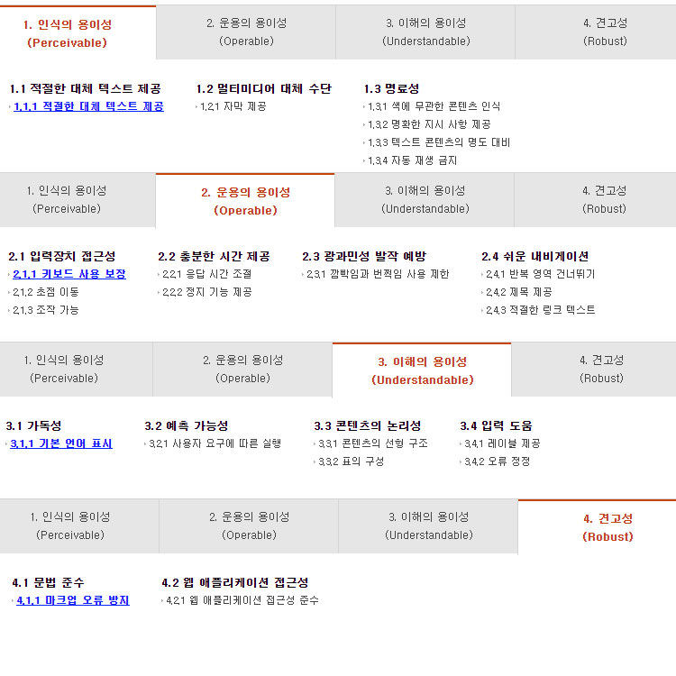

HTML
HTML(Hyper Text Markup Language)은 웹문서를 표현하기 위한 하이퍼 텍스트 마크업 언어입니다.
하이퍼텍스트 = 문서에서 다른 문서로 이동하는 것
마크업 = 태그를 사용하여 콘텐츠의 의미를 부여하는 것
태그(tag)
태그는 HTML에서 정보를 전달하는 방식을 의미합니다.
- 태그는 열린태그&닫는태그가 있습니다.
- 닫힌태그에는 "/"가 있어야 합니다.
- 닫는태그가 필요없는 것도 있습니다.
- HTML5 에서는 "/"가 생략이 가능합니다.
속성(Attrubute)
속성은 요소에 정보를 추가하거나 다양한 기능을 설정합니다.
속성은 여러가지 태그에 공통적으로 사용할 수 있는 속성도 있으며, 특정한 태그에만 사용하는 속성도 있습니다.
요소(Element)
요소는 HTML을 구성하는 가장 기본 단위입니다.
태그의 시작 태그와 끝나는 태그 사이의 범위를 요소라고 합니다. (태그와 똑같다고 보면됩니다.)
주석
<!--주석-->
주석표시는 프로그램에 영향을 미치지 않으며, 설명이나 메모를 목적으로 합니다.
블록요소와 인라인요소
블록요소는 박스, 인라인요소는 텍스트를 의미합니다.
- 블록 엘리먼트(Block Element)
- 독립된 박스 영역으로 한줄에 하나의 블록요소만 표현할 수 있습니다.
- 블록요소 안에는 블록요소와 인라인 요소를 포함할 수 있습니다.
- <div>, <p>, <ul>, <li>, <hr>, <address>, <h1>
- 인라인 엘리먼트(Inline Element)
- 독립된 텍스트영역으로 한줄에 여러개의 인라인 요소를 표현할 수 있습니다.
- 인라인 요소에는 블록요소가 포함될 수 없지만, 인라인 요소는 포함할 수 있습니다.
- <span>, <img>, <a>, <input>, <button>, <br>, <em>, <strong>
DTD(Document Type Declaration) 선언
웹 문서를 제작하기 위해서는 웹 문서 유형을 설정해야합니다.
독타입을 설정하지 않거나 잘못 설정하면 브라우저에 따라 화면이 다르게 나오거나 랜더링이 달라지기 때문에 독타입을 설정해야 합니다.
<!-- HTML 4.01 Strict -->
<!DOCTYPE HTML PUBLIC "-//W3C//DTD HTML 4.01//EN" "http://www.w3.org/TR/html4/strict.dtd">
<!-- HTML 4.01 Transitional -->
<!DOCTYPE HTML PUBLIC "-//W3C//DTD HTML 4.01 Transitional//EN" "http://www.w3.org/TR/html4/loose.dtd">
<!-- HTML 4.01 Frameset -->
<!DOCTYPE HTML PUBLIC "-//W3C//DTD HTML 4.01 Frameset//EN" "http://www.w3.org/TR/html4/frameset.dtd">
<!-- XHTML 1.0 Strict -->
<!DOCTYPE html PUBLIC "-//W3C//DTD XHTML 1.0 Strict//EN" "http://www.w3.org/TR/xhtml1/DTD/xhtml1-strict.dtd">
<!-- XHTML 1.0 Transitional -->
<!DOCTYPE html PUBLIC "-//W3C//DTD XHTML 1.0 Transitional//EN" "http://www.w3.org/TR/xhtml1/DTD/xhtml1-transitional.dtd">
<!-- XHTML 1.0 Frameset -->
<!DOCTYPE html PUBLIC "-//W3C//DTD XHTML 1.0 Frameset//EN" "http://www.w3.org/TR/xhtml1/DTD/xhtml1-frameset.dtd">
<!-- XHTML 1.1 -->
<!DOCTYPE html PUBLIC "-//W3C//DTD XHTML 1.1//EN" "http://www.w3.org/TR/xhtml11/DTD/xhtml11.dtd">
<!-- HTML5 -->
<!DOCTYPE html>
언어 속성 설정
콘텐츠의 언어를 인식하고, 언어 정보를 추출하는데 사용합니다.
미리 언어를 설정하면 효율성이 더 좋아집니다.
<!-- HTML5 -->
<html lang="ko">
<!-- HTML4 -->
<html xmlns="http://www.w3.org/1999/xhtml" xml:lang="ko">
문서 구조
HTML구조는 html 요소 안에 head와 body로 이루어져 있습니다.
- HTML 구조는 독타입 선언을 해주어야 하나의 웹 문서가 완성됩니다.
- HTML 문서는 상하 관계가 존재하는 계층적인 구조로 되어 있습니다.
- 상위에 있는 요소와 하위에 있는 요소는 부모 자식 관계로 표현하며, 이러한 구조를 DOM구조라고 합니다.
- head 요소에는 제목, 사이트정보, 스크립트, 스타일시트, 메타 정보 등을 제공합니다.
- body 요소에는 문서 본문에 해당하는 콘텐츠 영역입니다.
<!DOCTYPE html>
<html lang="ko">
<head>
</head>
<body>
</body>
</html>
웹 표준
웹 표준은 월드 와이드 웹의 측면을 서술하고 정의하는 공식 표준이나 다른 기술 규격을 가리키는 일반적인 용어이다. 최근에 이 용어는 웹 사이트를 작성하는 데 중요도가 높아지고 있으며 웹 디자인, 개발과 관계가 있다. 수많은 상호 의존성이 있는 표준들과 규격들 가운데 일부는 단지 월드 와이드 웹으로만 끝나는 것이 아니라, 인터넷의 관리 측면이기도 하며 이러한 표준들은 직간접적으로 웹 사이트, 웹 서비스 개발과 관리에 영향을 주고 있다. 이러한 것들 모두 "웹 표준"이라고 부르지만 웹 표준으로 이동하는 것을 찬성하는 사람들은 사용성과 접근성에 직접 영향을 미치는 더 높은 수준의 표준에 초점을 두는 경향이 있다.
- 표준화 단체인 W3C(World Wide Consortium)가 권고한 표준안에 따라 웹사이트를 작성할 때 이용하는 HTML, CSS, JavaScript 등에 대한 규정을 담고 있으며 웹 표준의 궁극적인 목적은 웹사이트에 접속한 사용자가 어떠한 운영체제나 브라우저를 사용하더라도 동일한 결과를 보이게 하는 것이다.
- 장점 : 수정 및 운영관리 용이, 접근성 향상, 검색엔진 최적화, 다양한 브라우저에서 작동가능
- W3C(World Wide Consortium)에서는 웹 표준은 접근성(웹 접근성), 사생활 보호, 보안, 국제화의 측면에서 고려해야 한다고 한다.
웹 접근성
웹 접근성(web accessibility)은 장애인이나 고령자분들이 웹 사이트에서 제공하는 정보를 비장애인과 동등하게 접근하고 이용 할 수 있도록 보장하는 것으로 웹 접근성 준수는 법적의무사항 입니다.

[웹 콘텐츠 제작기법]
- 준수 내용: 인식의 용이성, 운용의 용이성, 이해의 용이성, 견고성
- 준수 고려사항: 시각적, 이동성(손을 쓰기 어려운분들), 청각, 인지
- 대체 사항: 스크린리더, 고대비, 충분한 시간 제공, 쉬운 용어 사용, 마우스 대체로 키보드사용 등
HTML5shiv
HTML5의 새로운 요소를 지원해주지 못하는 브라우저나 구 버전의 익스플로러 등에 HTML5 요소를 쓸 수 있게 하는 Javascript 라이브러리 입니다.
- HTML5에 추가된 header, section, article, footer, nav, aside,figure, figcaption, main, content 등의 요소를 사용할 수 있게합니다.
- head안에 <script src=" 다운받은 js 주소 "></script> 를 넣습니다.
- 다운 받을 수 있는 곳 : html5shiv
Viewport
Viewport는 여러 디바이스의 따라서 적절하게 반응하는 웹을 만들기 위해 사용합니다.
컴퓨터, 노트북, 태블릿, 스마트폰 등 각 디바이스 별 해상도는 다릅니다. 그래서 웹페이지가 확대돼서 보여지는데, 그것을 방지하기 위해 사용됩니다.
| 속성 | 설명 | |
|---|---|---|
| width | 뷰포트 너비 | |
| heigth | 뷰포트 높이 | |
| user-scalable | 확대/축소 가능 여부 | |
| initial-scale | 초기 확대/축소 값 | |
| minimum-scale | 최소 확대/축소 값 | |
| maximum-scale | 최대 확대/축소 값 | |
| viewport-fit: | cover | 뷰포트 크기가 기기 디스플레이를 모두 채우도록 조정됩니다. 디스플레이 바깥 영역으로 밀려나지 않도록 safe area inset 변수를 함께 사용할 것을 권장합니다. |
| contain | 뷰포트 크기가 디스플레이 내에 새겨진 가장 큰 직사각형에 들어맞게 조정됩니다. | |
<meta name="viewport" content="width=device-width, initial-scale=1"> <!--예시-->Meta
meta태그는 웹 문서에 대한 여러가지 정보를 제공합니다.
| Meta데이터 | 설명 |
|---|---|
| charset | 웹 페이지 언어 설정 |
| author | 웹 페이지 만든 사람 |
| description | 웹 페이지에 대한 설명 |
| keywords | 웹 페이지 키워드 |
| Date | 제작일 |
| Refresh | 몇초마다 새로고침 / 몇초후 이동 |
| apllication name | 웹 페이지에 관련된 웹 응용프로그램 이름 |
| generator | 웹 페이지에 만든 소프트웨어의 이름 |
| Referrer / referrer | 문서에서 전송된 요청에 첨부된 HTTP 헤더의 참조자(Referer)를 제어 |
| robots | 검색 로봇의 방문을 설정 |
| format-detection | 아이폰 사파리에서의 숫자를 전화 번호 등으로 자동인식하는 것을 제거 |
<!--HTML5 언어설정-->
<meta charset="UTF-8"> :모든 언어가 지원이 된다는 뜻
<!--HTML4 언어설정-->
<meta http-equiv="Content-Type" content="text/html;charset=UTF-8">
<!--웹 문서에 대한 저작자 설정-->
<meta name="author" content="aram">
<!--웹 문서에 대한 설명-->
<meta name="description" content="이 사이트는 00 사이트 입니다.">
<!--웹 문서에 대한 키워드 설정-->
<meta name="keyword" content="키워드1, 키워드2, 키워드3">
<!--웹 문서에 대한 웹 응용 프로그램 이름-->
<meta name="application-name" content="응용 프로그램 이름">
<!--웹 문서에 대한 소프트웨어 이름-->
<meta name="generator" content="소프트웨어 이름">
<!--웹 문서에 대한 referrer 제어-->
<meta name="Referrer" content="no-reffer"> //HTTP Referrer header를 전송하지 않습니다.
<meta name="referrer" contents="origin"> //문서의 origin을 전송합니다.
<!--웹 문서에 대한 검색 로봇 설정-->
<meta name="robots" content="ALL"> //모든 검색 로봇의 방문을 허용합니다.
<meta name="robots" content="none"> //모든 검색 로봇의 방문을 허용하지 않습니다.
<meta name="robots" content="noindex, nofollow, noarchive, nosnippet, noodp, notranslate, noimageindex">
//검색결과에 페이지를 표시하지 않으며 검색결과에 '저장된 페이지' 링크를 표시하지 않습니다, 이 페이지의 링크를 따라가지 않습니다,
검색결과에 '저장된 페이지' 링크를 표시하지 않습니다, 이 페이지에 대한 검색결과에 스니펫을 표시하지 않습니다,
이 페이지에 대해 표시된 제목이나 스니펫에 오픈 디렉토리 프로젝트(Open Directory project)의 메타데이터를 사용하지 않습니다,
검색결과에 페이지의 번역을 제공하지 않습니다, 이 페이지의 이미지에 대한 색인을 생성하지 않습니다.
<!--모바일 웹에서 숫자를 전화 번호 등으로 자동인식하는 것을 제거-->
<meta name="format-detection" content="telephone=no , address=no, email=no">
Tag
<div>
div 태그는 문서의 색션을 만들거나 영역을 만들때 사용합니다.
<p>
p 태그는 문단을 쓸 때 사용합니다.
- p태그와 p태그 사이에는 한 줄의 행간이 표현됩니다.
<ul>
ul태그는 순서가 없는 목록을 정의합니다.
<li>
li태그는 목록의 항목을 정의합니다.
- li태그는 ul태그, ol태그, menu태그와 같이 사용합니다.
- li태그안에는 다른 목록을 중첩으로 사용가능 합니다.
<a>
a태그는 하이퍼 링크를 정의합니다.
- 하이퍼 링크란 현재 페이지에서 다른 페이지로의 이동을 말합니다.
- 방문하지 않은 링크는 밑줄과 파란색으로 표시됩니다.
- 방문한 링크는 밑줄과 보라색으로 표시됩니다.
- 활성화 된 링크는 밑줄과 빨간색으로 표시됩니다.
- HTML5에서는 a 태그는 블록 요소를 포함할 수 있습니다.
<img>
img태그는 이미지를 정의합니다.
- img태그는 src속성(이미지 경로)과 alt속성(이미지를 표시할 수 없을 때 출력할 내용)은 필수적으로 설정합니다.
- img태그는 인라인 구조이며, border, border-radius, padding, margin, width, heigt 속성값을 설정할수 있습니다.
- 만약 width, height 속성을 정하지 않으면 이미지 원본 크기 그대로 나옵니다.
- 만약 width/height 속성으로 가로/세로 크기만 정하면 다른쪽 크기는 원본의 가로 세로 비율에 맞게 정해집니다.
<pre>
pre태그는 미리 작성된 텍스트를 그대로 출력해주며, 블록형태로 사용됩니다.
<code>
code태그는 컴퓨터나 프로그래밍 코드 일부를 그대로 출력하고자 할 때 사용됩니다.
- code 태그는 인라인 태그입니다.
<br>
br태그는 line break를 의미하며, 강제 줄바꿈을 설정합니다.
- p태그를 사용해서 문단을 바꾸면 문단사이에 공백라인이 들어가지만, br태그를 사용하면 줄바꿈이 일어납니다.
- br태그는 닫는태그가 없습니다.
<hr>
hr태그는 문단이나 영역을 나눌때 수평선을 그릴 수 있습니다.
- hr태그는 닫는태그가 없습니다.
<table>
table 태그는 표를 만들때에 사용합니다.
- 각 열의 의미에 따라 thead, tbody, tfoot 태그로 구분지을 수 있습니다.
- <th> 는 table head의 약자로, 표의 제목을 적습니다. 기본값은 굵은 글씨체입니다.
- <tr> 은 table row의 약자로, 가로줄(행)을 만듭니다.
- <td> 는 table data의 약자로, 셀을 만드는 역활입니다.
- <td colspan="숫자"> : 가로로 이웃한 셀(행)을 숫자 칸만큼 합칩니다.
- <td rowspan="숫자"> : 세로로 이웃한 셀(열)을 숫자 칸만큼 합칩니다.
- <colgroup> 은 뒤에나오는 테이블의 행(td태그)에 적용할 스타일을 미리 적용합니다.
- <col> 로 각 행에 대해 스타일을 따로 적용할 수있습니다.
<table class="table table-bordered table-striped table-hover">
<thead>
<tr>
<th>1번째 열의 제목</th>
<th>2번째 열의 제목</th>
</tr>
</thead>
<tbody>
<tr>
<td>1번째 행의 첫번째 박스</td>
<td>1번째 행의 두번째 박스 </td>
</tr>
<tr>
<td>표</td>
<td>입니다</td>
</tr>
</tbody>
</table>
/*표를 만드는 예시입니다.*/<caption>
caption태그는 표의 제목을 설정합니다.
- caption태그는 table태그 바로 다음에 사용합니다.
- 기본 위치는 표 위 가운데입니다.
- caption-side 속성을 사용해서 위치를 바꿀 수 있습니다.
<link>
link태그는 해당 문서와 외부 소스(external resource) 사이의 관계를 정의할 때 사용합니다.
- link태그는 빈태그이며, 속성만을 포함합니다.
- link태그는 head요소 내부에만 위치할수 있고, 개수에는 제한이 없습니다.
- href : 링크될 외부 리소스(external resource)의 URL를 명시합니다. URL은 절대적이거나 상대적입니다.
- rel : 필수 속성으로, 현재 문서와 외부 리소스 사이의 관계를 명시합니다. author, stylesheet, icon, prev등이 있습니다.
<strong>
strong태그는 중요한 텍스트를 강조하기 위해 사용합니다.
의미를 강조하고 싶을 때 사용합니다. 기본모양은 굵은 글자입니다.
<em>
em태그는 중요한 텍스트를 강조하기 위해 사용합니다.
em태그는 특정부분을 강조하고 싶을 때 사용합니다. 기본모양은 기울임꼴(이태리체) 입니다.
<h1>
h태그는 섹션, 문단의 제목을 설정합니다
- h1부터 h6까지 있으며, h6으로 갈수록 글씨가 작아집니다.
- 제일 큰 h1태그는 한페이지에 하나만 사용하는 것이 좋습니다.
- 제목태그는 SEO(Search Engine Optimization검색 엔진 최적화)에 영향을 끼치기 때문에 잘 사용하는것이 좋습니다.
<span>
span태그는 div태그처럼 특별한 기능을 가지지 않고 영역을 만들때 사용합니다.
span 태그는 div와 달리 display가 inline형태입니다.
<form>
form태그는 입력된 데이터를 한 번에 서버로 전송합니다.
form 태그는 웹 페이지에서의 전체 양식을 의미하며, 화면에 보이지 않는 추상적인 태그입니다. 로그인 창이나, 회원가입 폼 등이 있습니다. 텍스트 필드에 글자를 입력하거나, 체크박스나 라디오 버튼을 클릭하고 제출 버튼을 누르면 백엔드 서버에 양식이 전달되어 정보를 처리하게 됩니다.
- action : 폼을 전송할 서버 쪽 스크립트 파일을 지정합니다. (URL)
- method : 폼을 서버에 전송할 방식-http 메소드를 정합니다. (GET 또는 POST)
- name: 폼을 식별하기 위한 이름을 지정합니다.
- actocomplete : HTML5 에 추가되었으며 양식의 자동완성을 지정합니다.
- accept-charset : 폼 전송에 사용될 문자 인코딩을 지정합니다.
<label>
label 태그는 입력 양식창(input, button, textarea 등)을 설명하는 이름표입니다.
- label 태그에 적힌 텍스트를 선택하면, label과 연결된 입력 양식창이 선택됩니다.
- label의 for의 값과 양식의 id의 값이 같으면 연결됩니다.
<input type="text" id="uid" name="uid" class="input_text" maxlength="20" placeholder="아이디">
<label for="uid" class="ir_so">아이디</label><fieldset>
fieldset 태그는 form태그에서 연관된 요소들을 하나의 그룹으로 묶을 때 사용합니다.
- fieldset태그는 하나의 그룹으로 묶은 요소들 주변으로 박스 모양의 선이 그려집니다.
- form태그 안에 여러개의 fieldset태그가 있을 수 있습니다.
- disabled : form 태그가 비활성화됨
<legend>
legend 태그는 fieldset 태그의 제목을 설정합니다.
<input>
input태그는 사용자가 폼 태그에 입력할 수 있는 공간을 설정합니다. 텍스트 입력 뿐 아니라, 전송 버튼, 라디오 버튼, 체크 박스 등 여러 가지로 표현될 수 있습니다.
- input 태그는 닫는 태그가 없습니다.
- type(필수 속성) : 태그 모양을 다양하게 변경할 수 있습니다. text, radio, checkbox, password, button, hidden, fileupload, submit, reset 등을 지정할 수 있습니다.
- name : 태그 이름을 지정합니다.
- placeholder : 기본적으로 쓰여져 있는 안내글이며 실제 값이 아니라 허상 값으로 커서가 앞에 있어 사용자가 입력하면 지워집니다.
- readonly : 태그를 사용자가 쓸 수는 없고 읽을 수만 있는 읽기전용으로 합니다.
- required : 해당 태그가 필수태그로 지정됩니다. 필수 태그를 입력하지 않고, submit 버튼을 누르면 에러메시지가 웹 브라우저에 출력됩니다.
- maxlength : 해당 태그가 필수태그로 지정됩니다. 필수 태그를 입력하지 않고, submit 버튼을 누르면 에러메시지가 웹 브라우저에 출력됩니다.
- value : 기본값을 설정합니다.
| tpye속성값 | 내용 |
|---|---|
| text | text를 입력하는 창을 생성합니다. |
| password | 비밀번호를 입력하는 창을 생성합니다. 입렵하는 내용에 '*' 로 표시됩니다 |
| radio | 여러 개의 항목 중에서 한 가지만 선택하도록 하는 라디오 버튼을 생성합니다. vlaue, name값을 꼭 지정해야 합니다. |
| checkbox | 여러 항목중에서 2개 이상 선택할 수 있는 체크박스를 생성합니다. vlaue, name값을 꼭 지정해야 합니다. |
| file | 파일이름을 입력하는 창을 생성합니다. |
| hidden | 사용자에게 보이지는 않지만 서버로 전송됩니다. 가입 경로, 날짜와 같이 굳이 사용자가 입력하지 않아도 알 수 있는 정보들을 서버로 전송합니다. |
| submit | 서버로 전송/제출되는 버튼을 만듭니다. |
| image | 이미지로 전송버튼을 만듭니다. |
| button | 자체 기능이 없는 일반버튼을 생성합니다. |
<button>
button 태그는 입력 데이터 값을 전송할 때 필요한 버튼을 만들 때 사용합니다.
- input 태그는 종료태그 없이 type 속성 이용해 버튼에 글자나 이미지 넣지만, button 태그는 시작태그와 종료태그 사이에 글자나 이미지를 넣을 수 있습니다.
- 항상 button 태그엔 type 속성을 넣어주어야 합니다.
- type : submit(전송 버튼), button(일반 버튼), reset(입력값 초기화 버튼)
- name : 다른 button 태그와 구별 위한 이름입니다.
<address>
address 태그는 소유자 또는 작성자의 연락처, 주소등을 나타냅니다.
- 기본 모양은 기울임꼴입니다.
<section>
section 태그는 일반적으로 문서의 콘텐츠 영역을 의미합니다.
<nav>
nav 태그는 웹 페이지 내에서 이동 할 수 있는 네비게이션 링크 그룹입니다.
- 문서의 핵심적인 페이지의 메뉴 및 서브메뉴에서 사용합니다.
- 한 문서에서 주로 한 번만 사용합니다.
- 문서안에 링크가 포함된 콘텐츠는 nav를 사용하지 않습니다.
- 핵심적인 네비게이션에 사용해야 하므로 footer내의 링크 그룹의 사용은 적절하지 않습니다.
<main>
main 태그는 웹 문서의 주요 콘텐츠 영역을 나타낼 때 사용합니다.
- 웹 페이지에서 한번만 사용할 수 있으며, 접근성과 검색 영역 노출을 향상시킵니다.
- main 태그는 가장 상위 요소이기 때문에, article, aside, footer, header, nav의 하위요소로 사용할 수 없습니다.
<aside>
aside 태그는 웹 문서의 메인 콘텐츠와 관련된 사이트 콘텐츠 영역을 나타냅니다.
- 메인 콘텐츠와 관련된 사이드의 정보, 광고 등 부분적인 정보를 그룹화할 때 사용합니다.
<header>
header 태그는 웹 문서의 헤더 영역을 나타냅니다.
- 웹 페이지에 대한 소개, 네비게이션영역, 테이블 영역, 검색 영역, 로고 영역을 포함하는 영역입니다.
- 제목 태그가 포함 될 수 있으며, 필수조건은 아닙니다.
- 섹션 콘텐츠가 아닌 그룹화 하기 위한 요소 이므로 section 요소를 포함할 수 없습니다.
<footer>
footer 태그는 웹 문서의 푸터 영역을 나타냅니다.
- 저작권 정보, 회사 정보, 관련 링크, 주소, 바닥글, 사이트정보등을 포함하는 콘텐츠 영역입니다.
- 섹션 콘텐츠가 아닌 그룹을 나타내는 요소이며, section, article, aside 요소를 포함할 수 있습니다.
<article>
article 태그는 웹 문서의 독립적인 항목을 나타내는 콘텐츠를 의미합니다.
- 포럼, 신문기사, 잡지, 블로그 항목, 게시판 글 등의 독립적인 항목을 나타냅니다.
- section은 하나의 주제를 나타낸다면, article은 주제를 묶은 독립적인 콘텐츠 입니다.
- section 요소 안에 article 요소를 쓸 수 있으며, article 요소 안에도 section요소를 쓸 수 있습니다.
<script>
script 태그는 자바스크립트와 같은 클라이언트측 스크립트를 정의합니다.
- src : 스크립트 파일을 외부에서 불러올 때 사용합니다. (URL)
- type : 스크립트의 종류를 설정할 수 있습니다. 기본은 text/javascript
기본적으로 웹 브라우저가 외부 자바스크립트를 불러오는 일반 script 태그를 만나게 되면, 우선 해당 스크립트를 내려받아 해석하고 실행(execute)할 때까지 웹 문서의 HTML 코드 parsing (어떤 페이지에서 내가 원하는 데이터를 특정 패턴이나 순서로 추출해 가공하는 것) 작업을 잠시 뒤로 미루게 됩니다. 그래서 용량이 큰 스크립트를 문서 해석 초기에 만나게 되면 해당 페이지를 불러오는 속도마저 지체되는 현상을 일으키게 되어 결국 전체적 성능을 떨어뜨리는 결과를 가져 오게 됩니다. 그것을 방지하기 위해 async와 defer 속성을 사용합니다.
- async : async 속성이 있는 스크립트는 비동기 적으로 실행됩니다. 스크립트가 다운로드되는 즉시 브라우저가 차단되지 않고 실행됩니다.
- defer : defer 속성이 있는 스크립트는 순서대로 실행됩니다.
<i>
i 태그는 특별한 이유로 평범한 글자와 구분하기 위해 사용됩니다.
HTML4에서 i 태그는 이탤릭체로 표현하기 위해 사용하였지만, HTML5에서 i 태그는 기술적인 구문, 언어, 사상, 생각 등에서 다른 텍스트와 구분하기 위해 사용합니다.
- 다음 비교 태그에 적합한 의미가 없을 때 사용합니다.
- 글씨를 중요성과 관련성을 전달하지 않고, 다른 텍스트와 구별 할 때 <b> 태그를 사용합니다.
- 글씨를 강조하고 싶다면 <em> 태그를 사용합니다.
- 글씨의 중요성을 강조하고 싶다면 <strong> 태그를 사용합니다.
- 글씨의 중요성과 강조를 고려하지 않는 단순 참고용 표시를 사용한다면 <mark> 태그를 사용합니다.
- 글씨의 전문적인 용어를 정의할 때는 <dfn> 태그를 사용합니다.
- 글씨를 위첨자로 표현하고 싶다면 <sup> 태그를 사용합니다.
- 글씨를 아래첨자로 표현하고 싶다면 <sub> 태그를 사용합니다.
- 글씨의 맞춤법이 틀린 단어를 표현하고 싶다면 <u> 태그를 사용합니다.
대표적으로 Font Awesome (웹 아이콘 폰트를 모아놓은 라이브러리)의 사용방법을 알아보겠습니다.
- 아이콘 웹 폰트 : fontawesome 4.7ver
- head의 아래에 링크(fontawesome)를 삽입합니다.
- 사이트에서 원하는 아이콘을 찾습니다.
- 클릭하면 나오는 태그 (ex: <i class="fa fa-bath" aria-hidden="true"></i>)를 사용합니다.
- color, border, size 등을 사용해서 stlye효과를 줄 수 있습니다.
<figure>
figure 태그는 사진, 이미지, 다이어그램 등 콘텐츠와 설명글을 묶을 때 사용합니다.
figure 태그는 시멘틱태그로 블록요소 입니다.
<figcaption>
figcaption 태그는 figure태그의 제목을 설정합니다.
- figure태그가 어떤 내용을 담고 있는지 설명합니다.
- 하나의 figure 태그안에는 <figcaption> 를 한번밖에 사용할 수 없습니다.
<iframe>
iframe 태그는 해당 웹 페이지 안에 또 다른 하나의 웹 페이지나 동영상 등을 삽입할 때 사용합니다.
iframe 태그는 inline frame 이라고도 부르며, 닫는태그가 필요합니다.
<iframe src="URL">대체 내용</iframe>| 속성 | 내용 |
|---|---|
| src | 삽입될 문서의 주소 |
| width | width값 지정 |
| heigth | heigth값 지정 |
| frameborder | 테두리 지정 (기본값은 검정색) |
| scrolling | 스크롤바 유무를 지정 |
<picture>
picture 태그는 img태그의 요소의 다중 이미지 리소스(multiple image resources)를 위한 컨테이너를 정의할 때 사용합니다.
- 뷰포트(viewport)의 너비에 따라 커지거나 작아지는 하나의 이미지를 사용하는 대신 서로 다른 디스플레이나 기기에서 해당 뷰포트에 알맞게 채워질 수 있도록 여러 개의 이미지 중에서 적절한 이미지를 사용할 수 있도록 해줍니다.
- <picture> 요소는 0개 이상의 <source> 요소와 하나의 <img> 요소로 구성되며, 브라우저는 <source> 요소 중에서 해당 뷰포트와 가장 잘 어울리는 <source> 요소를 다음과 같은 방법을 사용하여 선택합니다.
- 브라우저는 <source> 요소들의 속성값을 각각 확인해 나가며 조건을 만족하는 첫 번째 <source> 요소를 사용하고, 나머지 <source> 요소들은 무시합니다. 그래서 <img> 요소는 <picture> 요소의 자식 요소 중에서 가장 마지막에 위치해야 합니다.
<picture>
<source
media="(min-width: 650px)"
srcset="images/kitten-stretching.png">
<source
media="(min-width: 465px)"
srcset="images/kitten-sitting.png">
<img
src="images/kitten-curled.png"
alt="a cute kitten">
</picture><source>
source태그는 picture, audio, video 요소의 다중 미디어 리소스를 지정하기 위해 사용됩니다.
- srcset : 파일의 경로를 설정합니다.
- media : 지정한 이미지 표시를 위한 조건을 설정합니다.
- type : 파일의 유형을 설정합니다.
- sizes : 파일의 크기를 설정합니다.
<time>
time 태그는 시간과 날짜를 정의합니다.
브라우저에 따로 표시가 되진 않지만, 검색 엔진의 검색 결과 향상이나 알림 및 스케줄과 같은 사용자 기능을 위해 날짜와 시간데이터를 기계가 읽을 수 있는 형태로 변환해주는 datetime 속성을 포함할 수 있습니다.
<time datetime="YYYY-MM-DDThh:mm:ssTZD|PTDHMS"> 표시할 내용 </time>- datetime : : time요소가 지정하는 날짜나 시간을 나타냅니다.
- YYYY : 년도
- MM : 월
- DD : 일
- T : 날짜와 함께 시간까지 함께 나타낼 경우 날짜와 시간을 구분해 주는 구분자(separator)
- hh:mm:ss : 시:분:초
- TZD : 표준 시간대 지정자(Time Zone Designator)
- PTDHMS : 기간,날짜,시간,분,초